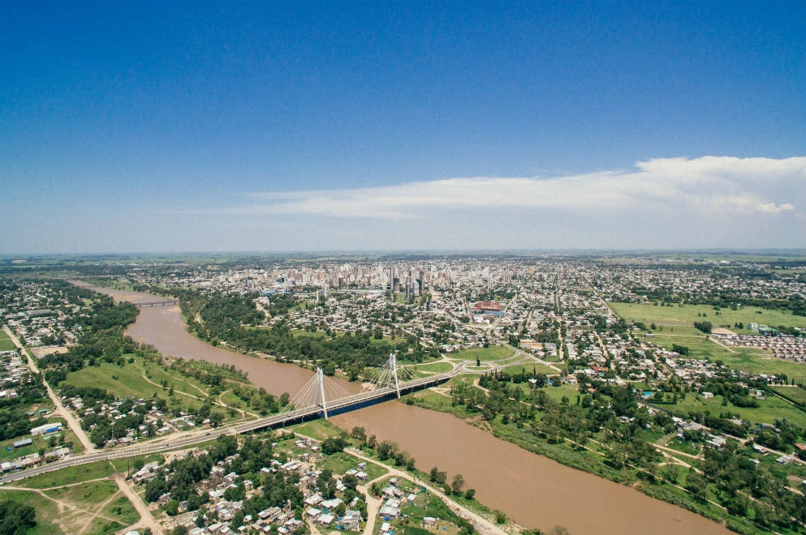
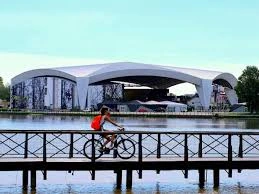
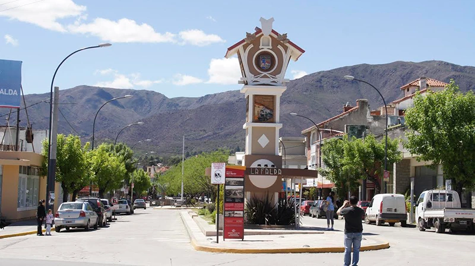

Dónde nos encontramos
Encuentra la feria más cercana a tu ciudad con horarios y opciones de accesibilidad
¡Próximo!
Córdoba Capital
Plaza San Martín
Av. General Paz y 27 de Abril
Horarios
Vie 15: 9:00-18:00
Sáb 16: 9:00-19:00
Dom 17: 10:00-18:00
80+ stands
200 espacios
Food trucks
Accesibilidad

Villa Carlos Paz
Centro de la ciudad
Av. San Martín 400
Horarios
Sáb 22: 10:00-19:00
Dom 23: 10:00-18:00
60+ stands
150 espacios
Vista sierras
Accesibilidad

Río Cuarto
Plaza Olmos
Constitución y Rivadavia
Horarios
Vie 29: 9:00-17:00
Sáb 30: 9:00-18:00
70+ stands
180 espacios
Transporte público
Accesibilidad

San Francisco
Plaza 25 de Mayo
Av. de la Universidad y Córdoba
Horarios
Sáb 05: 9:00-18:00
Dom 06: 10:00-17:00
55+ stands
120 espacios
Área niños
Accesibilidad

Villa María
Parque Sobremonte
Av. Sabattini y Tucumán
Horarios
Sáb 12: 10:00-19:00
Dom 13: 10:00-18:00
65+ stands
160 espacios
Área verde
Accesibilidad

La Falda
Plaza Próspero Molina
Av. España y 9 de Julio
Horarios
Sáb 10: 9:00-17:00
Dom 11: 10:00-16:00
45+ stands
100 espacios
Vista panorámica
Accesibilidad
Información General
Información General
- Entrada gratuita a todas las ferias
- Horarios sujetos a condiciones climáticas
- Se aceptan mascotas con correa
- Prohibido fumar en todo el predio
Transporte y Acceso
- Estacionamiento gratuito disponible
- Acceso en transporte público
- Espacios reservados para discapacitados
- Bicicleteros seguros
Servicios en el Evento
- Food trucks con opciones veganas
- Baños accesibles
- Punto de información
- Primeros auxilios